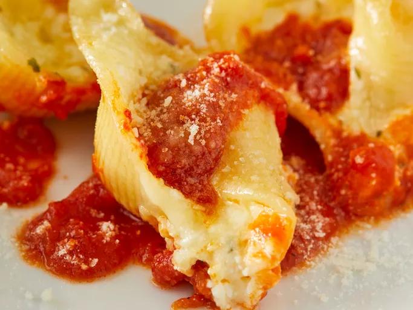

Stuffed Shells

Description
Jumbo stuffed pasta shells filled with a cheese mix, covered with sauce
, and baked.
Ingredients
- 16 ounce package jumbo pasta shells
- 4 cups large curd cottage cheese
- 12 ounces mozzarella cheese, shredded
- 3/4 cup grated parmesan cheese, divided
- 2 large eggs, lightly beaten
- 1 pinch garlic powder
- 1 teaspoon dried oregano
- 1 teaspoon dried parsley
- 26 ounce jar spaghetti sauce
Steps
- Preheat oven to 350 degrees F (175 degrees C).
- Bring a large pot of salted water to boil. Add shells and
cook, stirring occasionally, about 8 minutes until tender. Drain,
rinse under cold water, and set aside.
- Mix together cottage cheese, mozzarella cheese, 1/2 cup parmesan cheese,
eggs, and garlic powder in a large bowl. Rub oregano and parsley between
your palms to pulverize them, then stir into cheese mixture.
- Stuff cheese mixture into pasta shells.
- Spread 1/3 of the spaghetti sauce on the bottom of a 15x10-inch baking
dish. Place shells, seam-side up, close together in the dish. Spread
remaining sauce on top; sprinkle with remaining 1/4 cup Parmesan cheese.
- Bake in the preheated oven 25 to 35 minutes until bubbly.
Let stand 10 minutes before serving.